Medical imaging · ordinal deep learning · trustworthy AI
Diabetic retinopathy grading: does the network know that grade 4 is worse than grade 1?
1,600 colour fundus photographs, five severity grades. A 2 × 2 experiment crosses a CNN trained from scratch
with an ImageNet-pre-trained ResNet-18, and a nominal softmax head with a CORAL ordinal head that learns one
latent severity axis and four ordered thresholds. Every model is judged by quadratic weighted kappa, by the referral decision a screening
programme actually makes, and by whether its saliency, probabilities and uncertainty can be trusted. Paired bootstrap tests are used throughout.
Research and education only. This is not a medical device and must not be used to diagnose anyone.
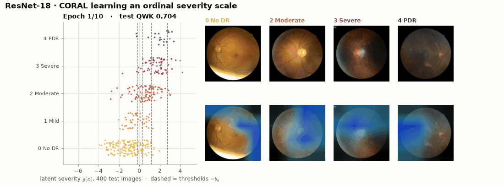
Results at a glance
Held-out test set of 400 images (45% referable, i.e. grade ≥ 2). Means ± s.d. over 3 independent training runs; intervals are 95% stratified bootstrap.
0.760
best mean test QWK (ResNet-18 · CE)
0.920
referable-DR AUC (ResNet-18 · CE)
+0.173
ΔQWK from ImageNet pre-training (ResNet-18 − CNN), 95% CI [+0.103, +0.249]
0.74
AUROC of MC-dropout entropy for flagging a wrong grade
Model
QWK
Accuracy
Mean |error|
|error| ≥ 2
Referable AUC
Ensemble QWK
Params
CPU / run
CNN · CE
0.582 ± 0.007
0.533 ± 0.004
0.730 ± 0.008
19.8%
0.827 ± 0.005
0.582
0.47 M
19 min
CNN · CORAL
0.609 ± 0.003
0.548 ± 0.003
0.657 ± 0.007
17.6%
0.833 ± 0.004
0.617
0.47 M
17 min
ResNet-18 · CE
0.760 ± 0.009
0.630 ± 0.005
0.500 ± 0.009
11.2%
0.920 ± 0.006
0.778
11.18 M
16 min
ResNet-18 · CORAL
0.755 ± 0.003
0.557 ± 0.004
0.575 ± 0.007
11.7%
0.913 ± 0.003
0.763
11.18 M
16 min
What the experiments show
Pre-training matters more than anything else. ImageNet ResNet-18 beats the CNN trained from scratch by ΔQWK +0.173 (95% CI +0.103 to +0.249) and by ΔAUC +0.083 for referable DR (0.920 vs. 0.827). Both differences are significant in a paired bootstrap (p < 0.001), and McNemar's test agrees (70 vs. 33 discordant eyes, p = 0.0003). With only 1,080 training images, features learned elsewhere are worth more than the architecture.
The ordinal head helps the weak model and is neutral for the strong one. For the CNN, CORAL raises QWK in all 3 seeds (0.582 → 0.609), cuts mean |error| from 0.73 to 0.66, and more than halves errors of ≥ 3 grades (5.6% → 2.4%). The paired CI (−0.008 to +0.076) still includes zero, so this is a consistent trend, not proof. For ResNet-18, CORAL and CE are tied on QWK (Δ −0.002, CI ±0.04).
Kappa and accuracy disagree. ResNet-18 · CE is right on 63.0% of eyes against 55.8% for CORAL (McNemar p = 0.01), yet the two have the same QWK. CORAL's extra mistakes are almost all one grade off (32.6% vs. 25.8% of eyes), mostly mild DR called no DR. Quadratic weights charge these little, so kappa does not move. Which model is "better" depends on whether exact grades or distance to the true grade matters.
Mild DR is nearly invisible at 128 px. Grade 1 is recalled for only 12–32% of eyes by every model. Its defining lesion, the microaneurysm, is smaller than one pixel at this resolution. The CNNs never predict proliferative DR (grade 4, 0% recall); ResNet-18 finds a third of these eyes.
The referral decision is far easier than exact grading. Grouping the grades into referable (≥ 2) or not gives ResNet-18 · CE an AUC of 0.920 ± 0.006. At Youden's threshold, chosen on validation data, it reaches 92% sensitivity and 74% specificity on test. Decision curves beat "refer everyone" across the clinically relevant range.
Uncertainty flags mistakes, and calibration needs more data. MC-dropout entropy is 1.80 bits on wrong grades versus 1.06 bits on correct ones (ResNet-18 · CORAL), so it flags errors with AUROC 0.74–0.75 for every model. Temperature scaling lowers ResNet-18 · CE's ECE from 0.093 to 0.067, but raises the CNN's (0.051 → 0.074). The 120-image validation set is too small to fit a temperature reliably.
Visualisations
Every figure is generated by scripts/make_figures.py. Grades use one ordered colour ramp (light amber → deep plum);
configurations are coloured by backbone (CNN, ResNet-18) and styled by loss
(cross-entropy, CORAL).
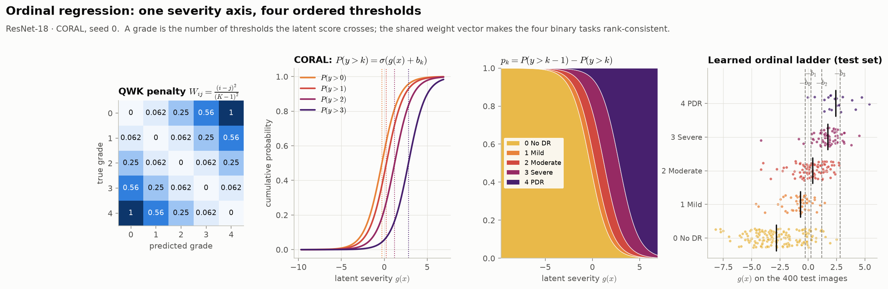
The ordinal model, drawn. The QWK penalty matrix, the four cumulative sigmoids \(P(y>k)=\sigma(g+b_k)\), the class probabilities they imply, and where the 400 test eyes actually fall on the learned severity axis.
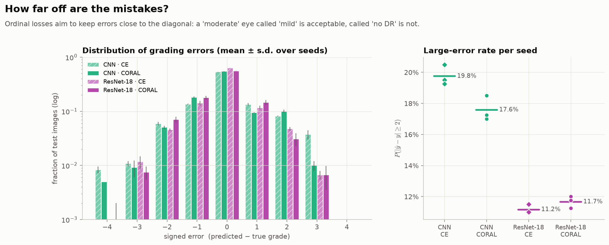
How far off are the mistakes? The distribution of signed grading errors and the rate of large (≥ 2-grade) errors for every seed.
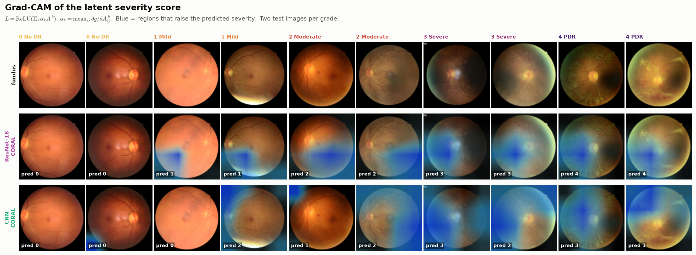
Grad-CAM of the latent severity score, two test eyes per grade, for both CORAL models.
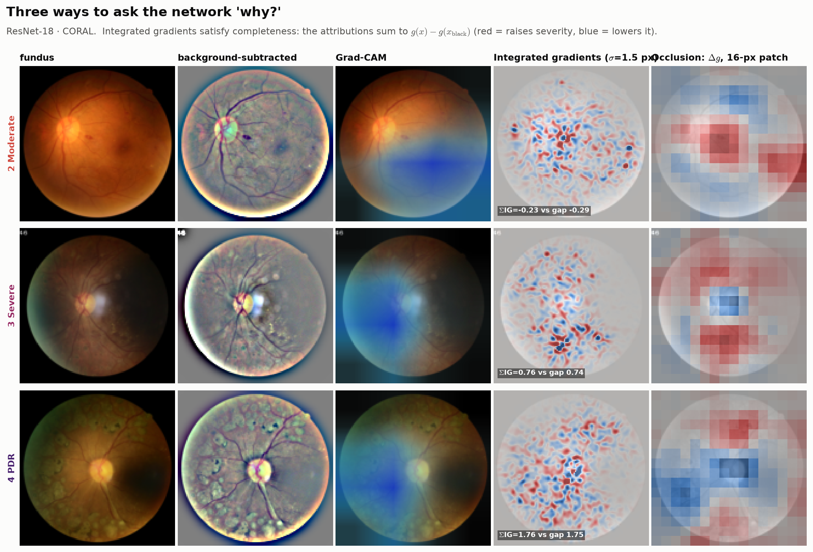
Three explanation methods. Grad-CAM is coarse; integrated gradients are pixel-level and satisfy completeness (the box shows \(\sum_i\mathrm{IG}_i\) against \(g(x)-g(x')\)); occlusion measures the change in severity directly. The background-subtracted view shows the lesions a grader looks for.
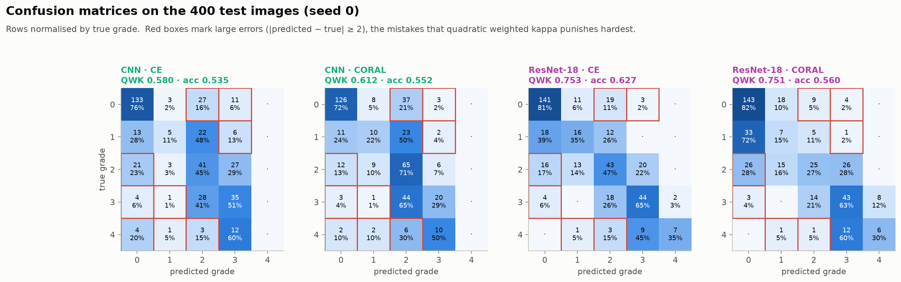
Confusion matrices with large errors boxed in red.
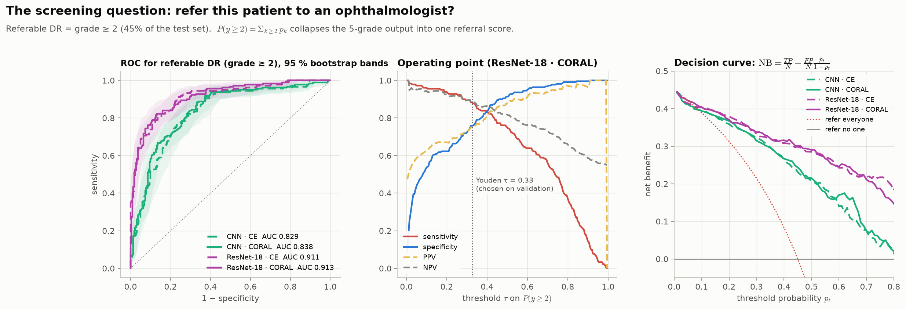
The screening decision: referable-DR ROC with bootstrap bands, the operating point, and decision-curve net benefit.
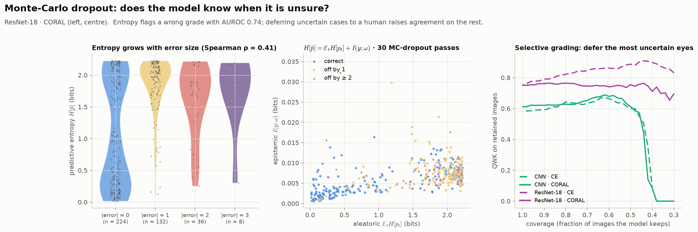
Monte-Carlo dropout: entropy against error size, the aleatoric/epistemic split, and QWK when uncertain eyes are deferred.
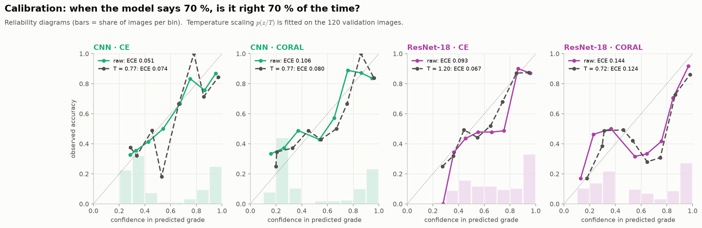
Calibration of the confidence in the predicted grade, before and after temperature scaling.
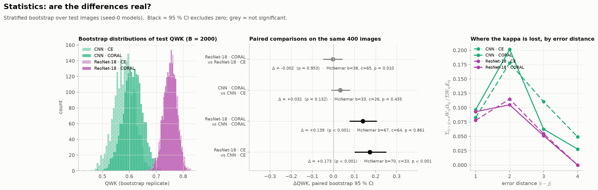
Is the difference real? Bootstrap QWK distributions, paired ΔQWK with McNemar's test, and which error distances cost the most kappa.
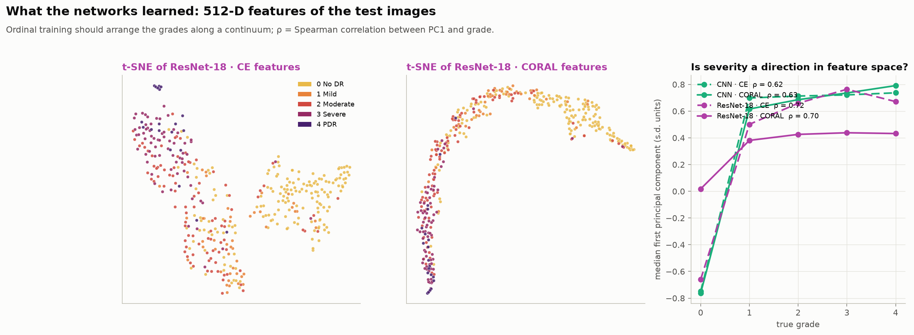
Feature space: t-SNE of the 512-D features, and whether severity is a direction (first principal component vs. grade).
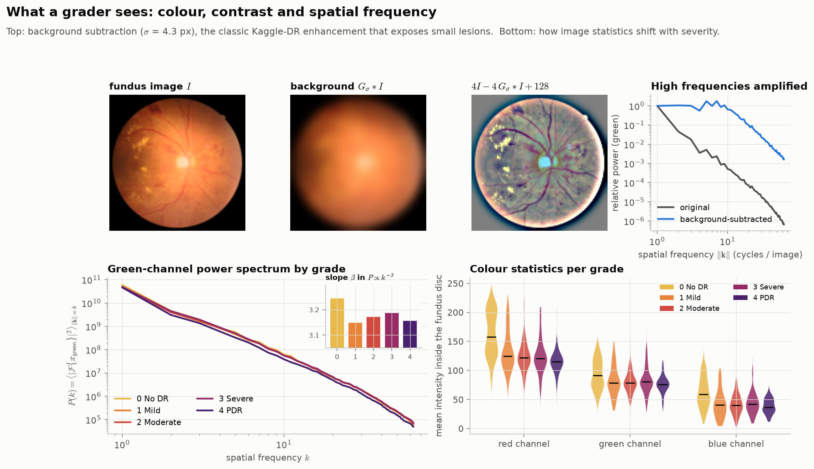
The images as signals: background subtraction, power spectra by grade and colour statistics.
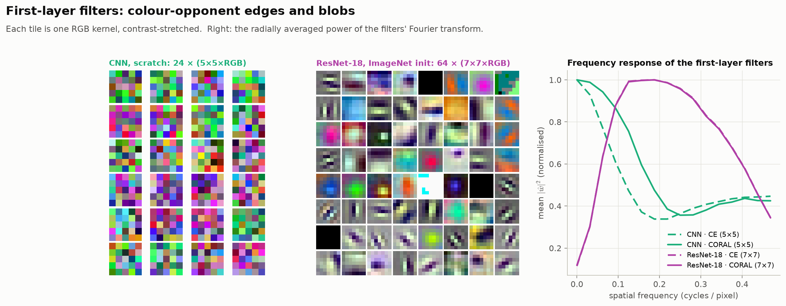
First-layer filters and their frequency response.
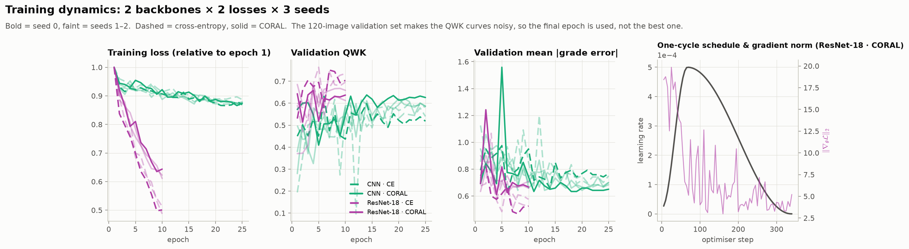
Training dynamics for all 12 runs and the one-cycle schedule.
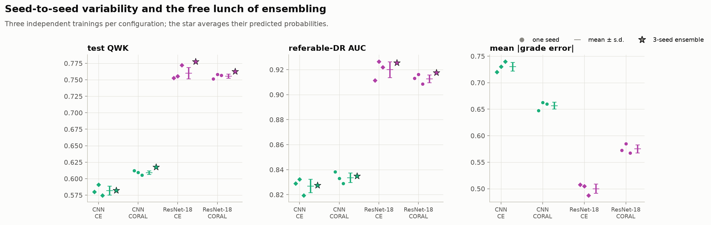
Seed-to-seed variability and what a 3-seed ensemble adds.
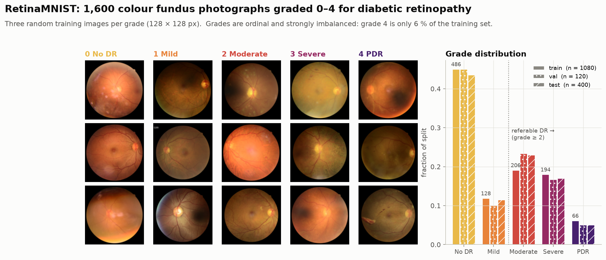
The data: example fundus photographs per grade and the grade distribution of each split.
To upload your own fundus photograph and see the grade, Grad-CAM and uncertainty live, open the Streamlit demo.
Every test eye on the learned severity axis \(g(x)\); the dashed lines are the thresholds \(-b_k\). Hover for the predicted grade.
Drag the slider: the referral operating point of all four models moves along their ROC curves; hover for how many eyes are referred or missed.
Browse ResNet-18 · CORAL Grad-CAM maps, four test eyes per grade, with the full grade distribution.
The 512-D ResNet-18 · CORAL features of all test eyes on three principal components (drag to rotate).
Limitations
RetinaMNIST is small (1,080 training images) and comes from a single challenge source (DeepDRiD); results will not transfer to other cameras, populations or image-quality distributions without validation.
At 128 × 128 px, microaneurysms, the earliest sign of DR, are often smaller than one pixel. This is why grade 1 is nearly invisible to every model, and why published RetinaMNIST results are far below full-resolution DR systems.
The validation set has only 120 images: it is too small to choose epochs, and temperatures fitted on it are noisy.
Grades carry label noise: graders disagree, especially between adjacent grades, which caps the attainable kappa.
Saliency maps show what the model used, not what is clinically correct. MC dropout is an approximation to Bayesian uncertainty.
Source code
The full implementation, notebook and trained weights are kept in a private repository. Access is available on request to professors, reviewers and collaborators via LinkedIn or GitHub.
Cao, Mirjalili & Raschka (2020). Rank consistent ordinal regression for neural networks with application to age estimation. Pattern Recognition Letters 140.
Yang et al. (2023). MedMNIST v2: a large-scale lightweight benchmark for 2D and 3D biomedical image classification. Scientific Data 10.
Liu et al. (2022). DeepDRiD: diabetic retinopathy grading and image quality estimation challenge. Patterns 3(6).
Gulshan et al. (2016). Development and validation of a deep learning algorithm for detection of diabetic retinopathy in retinal fundus photographs. JAMA 316(22).
Cohen (1968). Weighted kappa: nominal scale agreement with provision for scaled disagreement or partial credit. Psychological Bulletin 70(4).
Wilkinson et al. (2003). Proposed international clinical diabetic retinopathy and diabetic macular edema disease severity scales. Ophthalmology 110(9).
He et al. (2016). Deep residual learning for image recognition. CVPR.
Selvaraju et al. (2017). Grad-CAM. ICCV. · Sundararajan, Taly & Yan (2017). Axiomatic attribution for deep networks. ICML.
Gal & Ghahramani (2016). Dropout as a Bayesian approximation. ICML. · Guo et al. (2017). On calibration of modern neural networks. ICML.
Vickers & Elkin (2006). Decision curve analysis. Medical Decision Making 26(6).